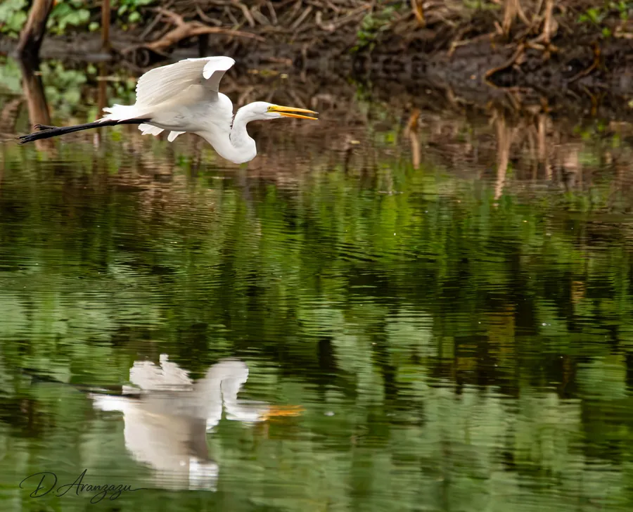
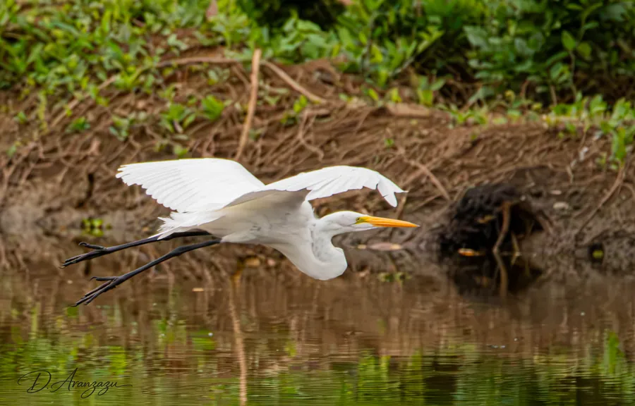
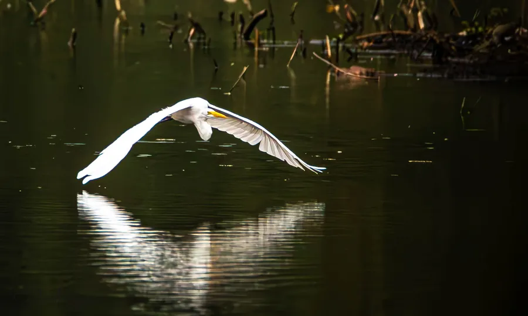
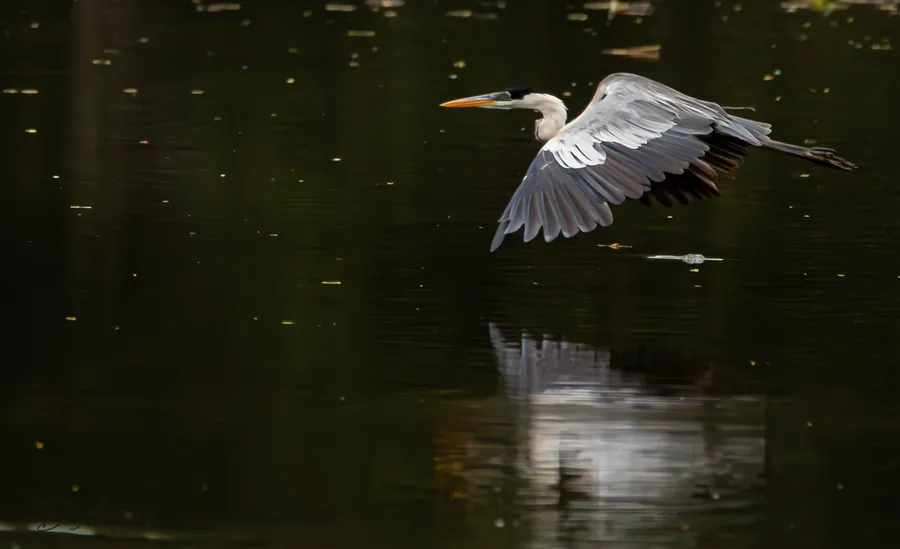
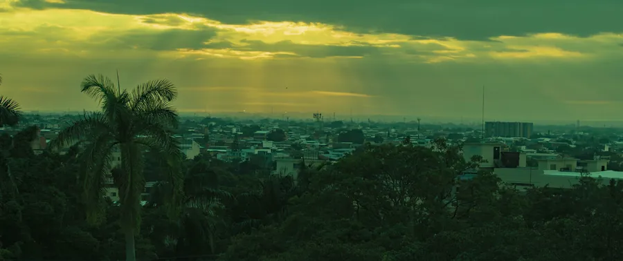
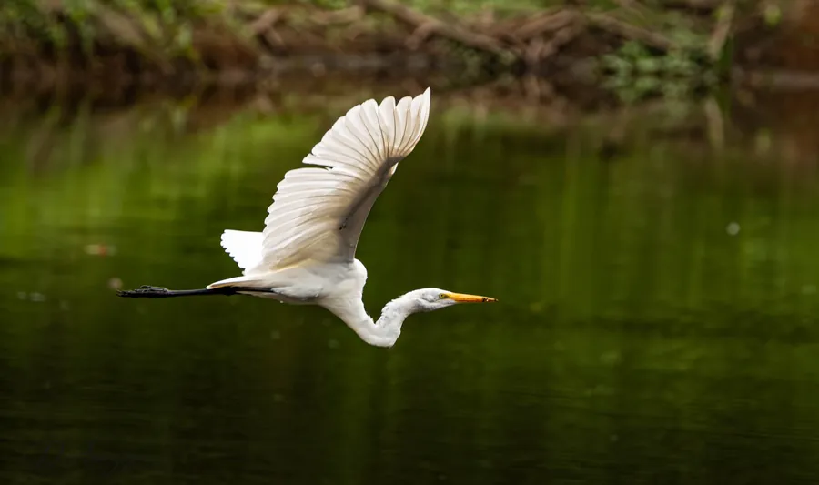
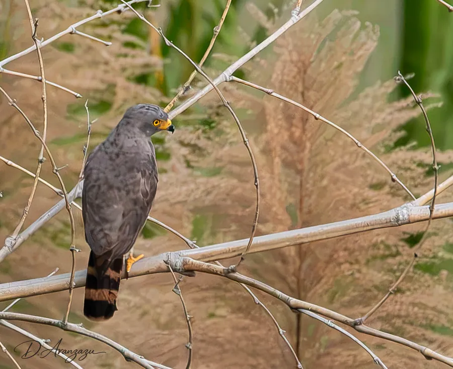
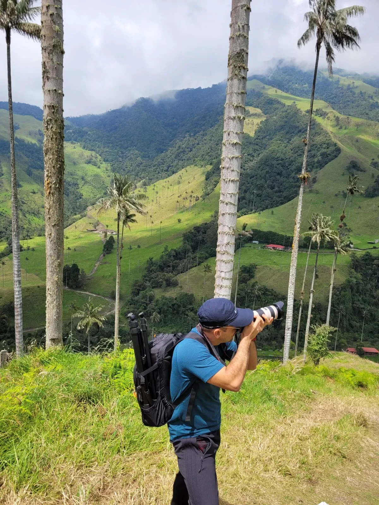

01
Mirada fija
Martinete Nycticorax nycticorax
600 mm · f/6.3 · 1/1000 s · ISO 2000
(01) Manifiesto
Cada ave es una conversación breve con el tiempo. Espero la luz, el silencio y ese instante en que el monte se detiene. Fotografío la fauna de Colombia, el país con más especies de aves del planeta, para que otros también se queden mirando.

(02) Selección
Sigue desplazándote →
Martinete Nycticorax nycticorax
600 mm · f/6.3 · 1/1000 s · ISO 2000
Chilacoa Aramides cajaneus
275 mm · f/5.6 · 1/800 s · ISO 6400
Guacamaya severa Ara severus
176 mm · f/5.6 · 1/1250 s · ISO 400
Perdiz de monte Odontophorus sp.
421 mm · f/6.3 · 1/400 s · ISO 6400
Gorrión montés Arremon brunneinucha
600 mm · f/6.3 · 1/400 s · ISO 6400
Gavilán juvenil Rupornis magnirostris
600 mm · f/6.3 · 1/500 s · ISO 5000
Garcita rayada Butorides striata
600 mm · f/6.3 · 1/800 s · ISO 6400
07 / 07
Ver el archivo completo↓(03) Ráfagas
La cámara dispara en ráfaga y el ave no se detiene. Estos pares salieron con apenas uno o dos segundos de diferencia: desliza para pasar del cuadro A al B.








Paciencia, luz natural y mucho silencio.
(04) Colecciones


(05) Archivo
43 / 43 fotografías



(06) Sobre mí
Soy Diego Aranzazu, fotógrafo de naturaleza. Salgo a caminar con la cámara, los binoculares y un trípode a cuestas, y dejo que sean las aves las que marquen el ritmo del día.
Mis fotografías nacen de observar primero y disparar después: conocer los hábitos, esperar la luz correcta y respetar siempre la distancia del animal. El objetivo es que cada imagen cuente cómo vive el ave, no solo cómo se ve.
Entender el comportamiento antes de levantar la cámara.
Luz natural, sin artificios que perturben al animal.
El ave siempre manda: si se incomoda, me retiro.
(07) Contacto
¿Una impresión, una colaboración o una salida de observación? Cuéntame y te respondo pronto.